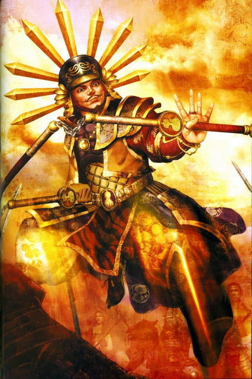

Toyotomi Hideyoshi: El Continuador del Sueño

De orígenes extremadamente humildes, Hideyoshi comenzó su carrera en el ejército del clan Oda como un simple portador de sandalias. Sin embargo, su astucia, carisma y capacidad para la negociación diplomática lo hicieron ascender rápidamente hasta convertirse en el general de máxima confianza de Nobunaga.
Tras la muerte de Nobunaga, Hideyoshi actuó con asombrosa velocidad para castigar al traidor y reclamar el control del ejército. A diferencia de su predecesor, prefirió la sumisión estratégica mediante la diplomacia y los asedios económicos antes que la destrucción total de sus rivales.
Una vez que controló la mayor parte del territorio nacional, impulsó cambios estructurales profundos. Destaca el catastro general de tierras para optimizar la recaudación de impuestos y el decreto de la "caza de espadas", con el cual confiscó todas las armas en manos de los campesinos, separando de manera definitiva la clase samurái del resto de la sociedad.
← Volver al Inicio